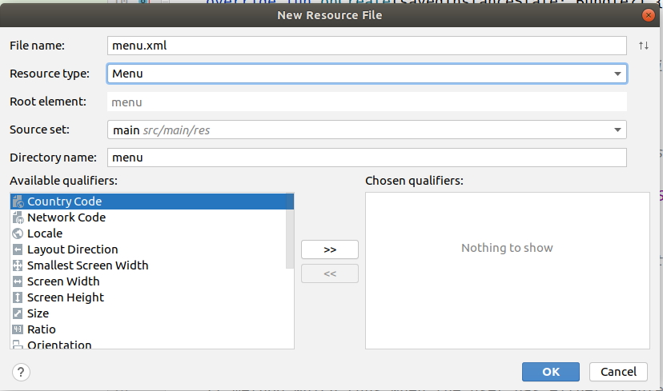

In this section we will:
So far, our apps have contained just one Activity, or screen to interact with the user. However, a typical app will contain several activities, each of which gathers different data from the user. The next section will cover how to create a second Activity, and how to pass data between activities. The second Activity is going to be a screen containing two buttons, to allow the user to choose the style of map to show on our map app (regular map, or opentopomap view).
We will be allowing the user to choose between the regular map and OpenTopoMap - a different style oriented towards walkers and cyclists. To see the latter effectively, ensure your default map location is:
Before we create the second Activity, we are going to add a menu to our map app from the previous section. Most Android apps contain a menu of some sort. There are various methods for implementing a menu in Android. Menus are activated via the action bar - the bar at the top of the app, often in a custom colour, which contains the app's actions.
There are two common styles of menu:
The "three dots" style menu is the classic style, still used by some apps today. We will be examining this style of menu in this unit; the navigation drawer is used by many contemporary apps but is more complex to implement so we will leave it until the end of the module.
To create your menu, right click on the res directory of your app and then create a new Menu resource. Give it a name of menu.xml.

Add this code to the menu.xml file:
<menu xmlns:android="http://schemas.android.com/apk/res/android"> <item android:id="@+id/choosemap" android:title="@string/choosemap"/> </menu>Note that there is a <menu> tag to define the menu as a whole, while each item is defined as an <item> tag. The item has an ID of choosemap and a title equal to the string with the name of choosemap (which should be defined in the strings.xml file).
The code above defines a menu in XML, however it does not actually make the menu appear. In our Java code we have to explicitly inflate the menu. To do this you add an onCreateOptionsMenu() method to your main activity.
override fun onCreateOptionsMenu(menu: Menu) : Boolean {
// In Java we would need to use getMenuInflater()
// In Kotlin, we can just use 'menuInflater' instead (see the notes on
// Kotlin properties in week 2)
menuInflater.inflate(R.menu.menu, menu)
return true
}
and you have to add the following new import lines:
import android.view.Menu import android.view.MenuInflater import android.view.MenuItemThe code above will run automatically when the activity is created; it basically loads in the menu from the XML (R.menu.menu is referencing the menu.xml file) and "inflates" it so that it can be seen in the GUI. Note that the example assumes that your menu is saved in the file menu.xml. If your menu is saved in another file, you need to change the reference to R.menu.menu appropriately.
If you add this code to your map app and run it, you should find that a menu with one item appears when you press the Menu button.
Next thing we want to do is to launch a second Activity when the user selects the menu item. First thing to do is to write code to respond to the user selecting a menu item. To do this, you override onOptionsItemSelected() in Activity. Here is an example:
override fun onOptionsItemSelected(item: MenuItem) : Boolean {
when(item.itemId) {
R.id.choosemap -> {
return true
}
}
return false
}
The onOptionsItemSelected() method takes a MenuItem as a parameter, which is the menu item which was selected. We can find out which MenuItem was selected by using the itemId property of the MenuItem (again, we are using Kotlin property syntax here; in Java we would need to use getItemId()). This will return the item's ID as defined in the menu.xml file. So in this example, if the menu item with the ID of choosemap was selected, we do something.
To launch a second Activity we create an Intent. An Intent basically represents an instruction to do something, such as launch a second Activity or even use the services of an entirely different app. Data can be added to the Intent; that is how we send data between activities.
Add the following code to the if statement above:
val intent = new Intent(this,MapChooseActivity::class.java); startActivity(intent)and add the following additional import:
import android.content.IntentThis code creates a new Intent. The two parameters are a reference to the current Activity (this) and the MapChooseActivity class. This is a variable representing the class, not an instance of it. (The perhaps-strange-looking .java at the end indicates that this is a Java class, not a Kotlin class; this is because
MapChooseActivity will inherit from AppCompatActivity, a Java class; we can only leave out the .java if working with a pure-Kotlin class not inheriting from any Java classes.)
We haven't created this Activity yet but this is intended to be our second Activity. We then start up our activity with startActivity().
We now need to create our second Activity. This will offer the user a choice to which map style to use - either the regular style, or a public transport view showing bus routes, train routes, etc. This will be done using a pair of buttons. The appropriate map style will be set depending on which button the user pressed. (This is not the most friendly way, it would be better to use radio buttons or a list, but it will do for now). Do this as follows:
package ..... // LEAVE YOUR PACKAGE UNCHANGED, do not literally write this!
import androidx.appcompat.app.AppCompatActivity
import android.os.Bundle
import android.content.Intent
import android.widget.Button
import android.view.View
class MapChooseActivity : AppCompatActivity() {
override fun onCreate(savedInstanceState: Bundle?) {
super.onCreate(savedInstanceState)
setContentView(R.layout.activity_map_choose)
}
}
<LinearLayout
xmlns:android="http://schemas.android.com/apk/res/android"
android:orientation="vertical"
android:layout_width="match_parent"
android:layout_height="match_parent">
<Button
android:layout_width="wrap_content"
android:layout_height="wrap_content"
android:text="@string/regularview"
android:id="@+id/btnRegular" />
<Button
android:layout_width="wrap_content"
android:layout_height="wrap_content"
android:text="@string/opentopomapview"
android:id="@+id/btnOpenTopoMap" />
</LinearLayout>
<activity android:name=".MapChooseActivity" android:label="@string/selectmap"> </activity>(The label should be a reference into your strings.xml file. You'll need to add a "selectmap" entry in your strings.xml file).
OK, we have a second activity created but we don't yet send the user's chosen option back to the original activity. How is this done? Basically we have to create another Intent in the second activity and send it back to the first.
You'll need to add some code to the onCreate() inside the second activity to handle the button press. Here is some example code:
val regular = findViewById<Button>(R.id.btnRegular)
regular.setOnClickListener {
sendBackMapChoice(false)
}
val opentopomap = findViewById<Button>(R.id.btnOpenTopoMap)
opentopomap.setOnClickListener {
sendBackMapChoice(true)
}
Note how we add lambdas to each button, to handle click events on each. Each
lambda then calls the method sendBackMapChoice() (to be discussed below) and passes an appropriate Boolean to it. This Boolean represents whether or not the opentopomap was chosen.
We now need to send this value back to the main activity. As briefly mentioned above, we can do this by sending an Intent back to the main activity, containing this boolean value. As well as launching a given Activity, we can use Intents to pass information between activities.
We will now write the sendBackMapChoice() method inside the
MapChooseActivity to do this, with the following code:
fun sendBackMapChoice(opentopo: Boolean) {
val intent = Intent()
val bundle = bundleOf("com.example.opentopomap" to opentopo)
intent.putExtras(bundle)
setResult(RESULT_OK, intent)
finish()
}
This code, specifically bundleOf(), creates something called a Bundle. A Bundle is basically a collection of data which can be passed around between Activities - think of it as a collection of key-value pairs. Here, the bundle contains one item - a boolean storing whether the OpenTopoMap is being used.
Note also how the entry in the bundle is labelled with the identifier com.example.opentopomap. Many entries can be placed in one bundle, so each needs to be identified uniquely. It is convention to start each entry with your domain name reversed (such as com.example here), hence com.example.opentopomap, the opentopomap bundle entry belonging to the example.com domain.
Having created the Bundle, we then add it to the intent and then call setResult to send a result back to the parent activity. You can think of a result as a little like a return code for a function. Here, we send back the result RESULT_OK to indicate to the calling activity (the app's main activity) that the secondary activity completed successfully. (You can also send back RESULT_CANCELED to indicate that the user cancelled the action in the second activity). Finally we call finish() to forcibly finish the activity.
The final part of the equation is to read the data sent back from the second activity in the original activity. There are two steps to this. First, when launching the second activity from the first, we have to specify that we are expecting a result to be sent back. To do this, change the line:
startActivity(intent)
to
startActivityForResult(intent,0)
This launches the second activity and states that we are expecting a result to be
sent back. The 0 is an ID that we use to determine which child activity produced
the result (a parent activity could launch several child activities, so when we
get a result, we need to identify which child activity produced the result).
This brings us straight on to the result-handling code, which runs in the first activity when we get a result from the second. This takes place in a method called onActivityResult(). Add this method to your main activity as follows:
override fun onActivityResult(requestCode : Int,resultCode : Int, intent: Intent?) {
if (resultCode==RESULT_OK) {
when(requestCode) {
0 -> {
intent?.apply {
val opentopomap = this.getBooleanExtra("com.example.opentopomap")
mv.setTileSource( if (opentopomap) TileSourceFactory.OpenTopo else TileSourceFactory.MAPNIK )
}
}
}
}
}
Note that you need the following additional import:
import org.osmdroid.tileprovider.tilesource.TileSourceFactory
Note how the onActivityResult() is working. It takes three parameters, including the requestCode (the ID of 0 that we used to identify our activity launch, see above), the resultCode (the code that the second
Activity sent back - RESULT_OK in our case to indicate all was OK) and the
Intent used to send the result back to the first activity. So our
onActivityResult() checks that a successful result was returned, and then checks that the result was sent back from a request with an ID of 0 (see above).
If so, we then extract the bundle data that we originally sent from the second Activity within the Bundle (see above) and set the map tile source to either OpenTopo (OpenTopoMap) or MAPNIK (the default map)
depending on what was sent back from the second activity.
Note the use of apply() on the Intent returned. This is a nice technique to avoid having to use an if statement to check whether intent is null. Instead, we use apply() with the safe-access operator ?. and specify a lambda. Inside the lambda specified with apply(), the this keyword will refer to the object which apply() is called on, i.e. intent here. The nice thing about this approach is that the lambda will never be called if intent is null (due to the safe-access operator), resulting in arguably more elegant and concise code compared to using an if statement.
val bundle = bundleOf("key1" to value1, "key2" to value2)